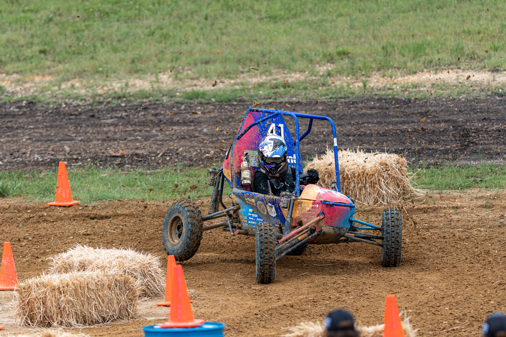

Rear Suspension Geometry

Rear Suspension Geometry

The car in action
As a result, the new geometry preserved the advantages of the previous version—such as constant speed maintenance over obstacles and a consistent ground contact patch—while reducing excessive body roll and the understeer tendency during mid-cornering. I also resolved the previous issue of one-wheeling in corners by increasing track width and rear suspension stiffness.
All decisions were made with careful consideration of proper clearances, allowable loads on the half-shafts and control arms, and full SAE rule compliance in collaboration with the frame and drivetrain teams.